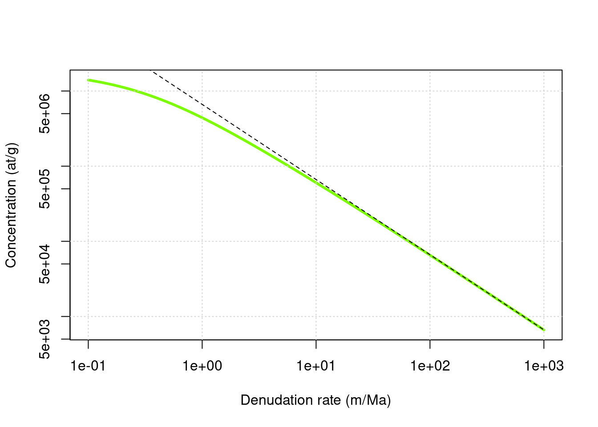
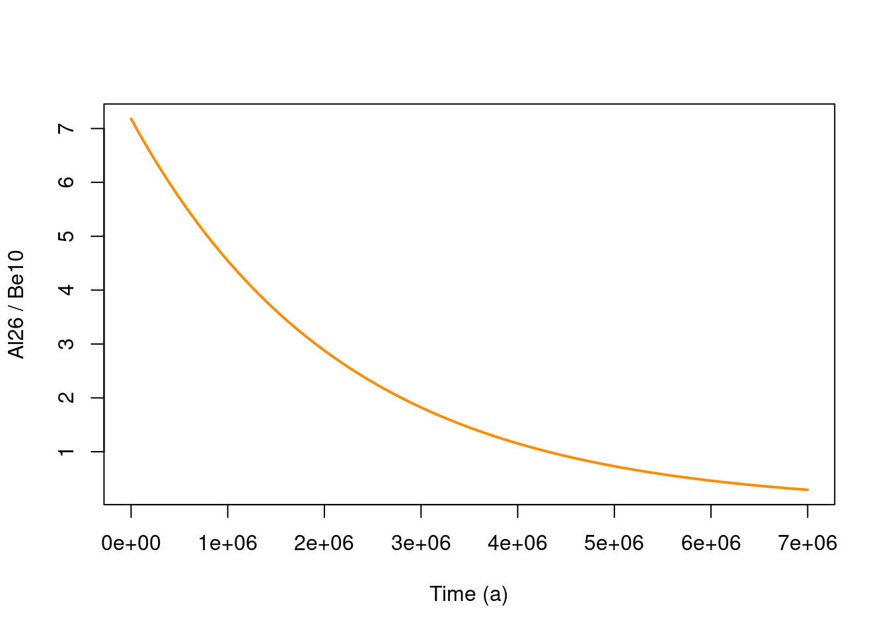

6 Application to denudation rate measurements
6.1 Concentration - denudation rate relationship
Now we are going to consider the evolution of concentration with denudation rate \(\varepsilon\). The computation will be carried out at the surface (\(z=0\)), but this could be done at any arbitrary depth. We will consider that \(t=+\infty\) and that we have reached the plateau concentration. The key equation is now, \[C=\sum_i \frac{P_i}{\frac{\rho \varepsilon}{\Lambda_i}+\lambda}\]
Which simplifies to \(C\approx\frac{P_i \Lambda_i}{\rho \varepsilon}\) if we neglect radioactive decay.
Let’s define the usual parameters.
altitude = 1000 # elevation in m
latitude = 45 # latitude in degrees
rho = 2.7
data(prm)
data(Lambda)
P = atm_pressure(alt=altitude,model="stone2000") # compute atmospheric pressure at site
S = scaling_st(P,latitude) # compute the scaling parameters according to Stone (2000)Now compute the steady-state concentration for a range of denudation rates.
nuc = "Be10"
ero = 10^seq(log10(0.1),log10(1000),length.out = 100) * 100/1e6*rho # a log-spaced vector for denudation rate expressed in m/Ma and converted in g/cm2/a
age = Inf # infinite age
z = 0 * rho # depth at which we are going to perform the calculation (cm converted to g/cm2)
C0 = 0 # inherited concentration
C = solv_conc_eul(z,ero,age,C0,prm[,nuc],S,Lambda) # compute concentration
plot(ero/100*1e6/rho,C,col="lawngreen",log="xy",type="l",lwd=3,ylab="Concentration (at/g)",xlab="Denudation rate (m/Ma)")
grid()
# what happens if we neglect radioactive decay
Prod = c(prm[1,nuc]*S$Nneutrons,prm[2,nuc]*S$Nmuons,prm[3,nuc]*S$Nmuons) # scaled production vector (defined for the sake of clarity of the expressions below)
lambda = prm[4,nuc] # radioactive decay
C2 = prm[1,nuc]*S$Nneutrons*Lambda[1]/ero + prm[2,nuc]*S$Nmuons*Lambda[2]/ero + prm[3,nuc]*S$Nmuons*Lambda[3]/ero
lines(ero/100*1e6/rho,C2,lty=2)
This figure (log-scales on both axes) highlights the strong inverse relationship, at steady-state, between denudation rate (\(\varepsilon\)) and concentration (\(C\)), which is the foundation of many geomorphological studies trying to establish landscape evolution rates. Note the change in the relationship at very low denudation rates, which corresponds to the situation where the effects of radioactive decay become predominant.
TODO Over what range of denudation rates it is reasonable to neglect radioactive decay? What kind of geological context could it correspond to?
A simple way to answer this question would be to compute the relative difference between the computed concentrations
error = abs(C-C2)/C*100
plot(ero/100*1e6/rho,error,log="xy",type="l",ylab="Relative error (%)",xlab="Denudation rate (m/Ma)")6.3 On the importance of muons
For \(^{10}\)Be the muonic represent a very small fraction of surface production :
nuc = "Be10"
f = (prm[2,nuc]+prm[3,nuc])/sum(prm[1:3,nuc])*100
paste("For",nuc,"muons represent",round(f,1),"% of SLHL surface production")## [1] "For Be10 muons represent 1.3 % of SLHL surface production"col_sp = "deepskyblue"
col_sm = "indianred1"
col_fm = "darkseagreen1"
nuc = "Be10"
alt = 0
lat = 30
rho = 2.65
P = atm_pressure(alt=alt,model="stone2000") # compute atmospheric pressure at site
S = scaling_st(P,lat)
data = data.frame(ero1=10^seq(log10(0.1),log10(2000),length=100)) # ero1 -> denudation in m/Ma
emin = min(data$ero1)
emax = max(data$ero1)
data$ero2 = data$ero1/1e6*100*rho # eros2 -> denudation in g/cm2/a
# steady state concentrations associated with individual pathways
data$Csp = prm[1,nuc]*S$Nneutrons/(prm[4,nuc]+(data$ero2/Lambda[1]))
data$Csm = prm[2,nuc]*S$Nmuons/(prm[4,nuc]+(data$ero2/Lambda[2]))
data$Cfm = prm[3,nuc]*S$Nmuons/(prm[4,nuc]+(data$ero2/Lambda[3]))
data$C = data$Csp + data$Csm + data$Cfm
#
plot(NA,xlim=c(emin,emax),ylim=c(0,1),log="x",xlab="Denudation rate (m/Ma)",ylab="Fraction",xaxs="i",yaxs="i")
polygon(c(emin,emax,emax,emin),c(0,0,1,1),col=col_fm)
polygon(c(emin,emax,rev(data$ero1)),
c(0,0,rev((data$Csp+data$Csm)/data$C)),col=col_sm)
polygon(c(emin,emax,rev(data$ero1)),
c(0,0,rev(data$Csp/data$C)),col=col_sp)
grid(col="black",equilogs = FALSE)
text(0.2,0.1,nuc,cex=2)
legend("bottomright",
c("Spallation","Stopping muons","Fast muons"),
pch=22,pt.bg=c(col_sp,col_sm,col_fm),pt.cex=1.5,cex=1,bg="white")